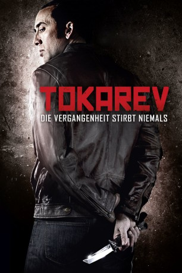

#303 Tokarev - Die Vergangenheit stirbt niemals
Alternativ: Rage (Englischer Titel)
 
 IMDB-Wertung: 5.0 / 10
IMDB-Wertung: 5.0 / 10  Metascore: 28
Metascore: 28 
Es war für den Ex-Kriminellen Paul Maguire wie ein Faustschlag ins Gesicht: Dem Verbrechen den Rücken gekehrt führt er mit seiner Familie ein beschauliches Leben als erfolgreicher Geschäftsmann. Doch die kaltblütige Ermordung seiner über alles geliebten Tochter wirft ihn von einem auf den anderen Moment komplett aus der Bahn. Mit einer russischen Pistole der Marke Tokarev TT33 wurde sie mit einem Kopfschuss regelrecht hingerichtet. Schnell wird klar: Seine alten Feinde wollen noch offene Rechnungen begleichen! Außer sich vor Wut kann er seiner eigenen, dunklen Vergangenheit nun nicht mehr entkommen. Mit seinen alten Kollegen kennt er nur ein Ziel: Vergeltung für den Tod seiner Tochter! Bis an die Zähne bewaffnet ziehen sie in einen halsbrecherischen Rachefeldzug gegen die Mörder. Die Täter werden bezahlen: Mit ihrem Leben!
Jahr: 2014
Dauer: 92 Minuten
FSK: 18
Land: USA Studio: Image EntertainmentTonspuren: DTS - ,
Untertitel:
Auflösung: 1080p (1920×816) Größe: 5642 MB
Genre: Action, Krimi, Thriller
Regisseur: Paco Cabezas
Drehbuch: Jim Agnew, Sean Keller
Soundtrack: Laurent Eyquem
Darsteller:
 Nicolas Cage als Paul Maguire
Nicolas Cage als Paul Maguire Rachel Nichols als Vanessa Maguire
Rachel Nichols als Vanessa Maguire Max Ryan als Kane
Max Ryan als Kane Michael McGrady als Danny Doherty
Michael McGrady als Danny Doherty Peter Stormare als Francis O'Connell
Peter Stormare als Francis O'Connell Pasha D. Lychnikoff als Chernov
Pasha D. Lychnikoff als Chernov- Patrice Cols als Anton
- Weston Cage als Young Paul
- Max Fowler als Mike
- Aubrey Peeples als Caitlin Maguire
- Jack Falahee als Evan
 Danny Glover als Det. Peter St. John
Danny Glover als Det. Peter St. John- Ron Goleman als Detective Hanson
 Michael Papajohn als Vory
Michael Papajohn als Vory- Paul Sampson als Sasha
- Kevin Lavell Young als Oliver
 Elena Sanchez als Lisa
Elena Sanchez als Lisa- Sarah Ann Schultz als Miss Russell
 Kelly Tippens als Eleanor
Kelly Tippens als Eleanor Judd Lormand als Mr. White
Judd Lormand als Mr. White Tom Waite als Track Suit Russian
Tom Waite als Track Suit Russian- Brent Nevison als David
- Dawn Hamil als Amber
- Seth Woodruff als Anton's Thug #2
- Steven Marlow als Anton's Thug #3
- Nathan O'Neil Smith als Anton's Thug #6
- Rick Whiston als CSI #2
- Richard Rionda Del Castro als Strip Club Patron
 Jamie Gliddon als Neighbor
Jamie Gliddon als Neighbor Kimberly Battista als Hostess , uncredited
Kimberly Battista als Hostess , uncredited- Kara Riann Brown als Druggie , uncredited
- Amir Zandi als Young Doherty
- Jon Dannelley als Young Kane
- Garrison Tyler als Ivan
- Eric C. Schmitz als Coroner
- Al Stokes als Mayor
- Bella Stevens als Singing Little Girl
- Michael Brannon als News Reporter #1
- Sean Owsley als News Anchor
- Steven Vickers Jr. als Jack
- Michael Waldron als Victor
- Kimberley Canova als Mrs. White
- Craig Savage als Anton's Thug #1
- Michael Stallings als Anton's Thug #4
- Joe Fuselli als Anton's Thug #5
- Nick Vasko als Anton's Thug #7
- Kizzy Ferguson als CSI #1
- Lindsay Grandquest als CSI #3
- Mark Swalley als News Reporter #2
- Phil Gilmer als Catholic Priest
Datei: X:\FSK18-2014\Tokarev - Die Vergangenheit stirbt niemals (2014, FSK18, 1920x816).mkv seit 16.02.2015
Festplatte: FSK18
 Es gibt insgesamt 27 Filme in der Gruppe 'FSK18-2014'
Es gibt insgesamt 27 Filme in der Gruppe 'FSK18-2014'